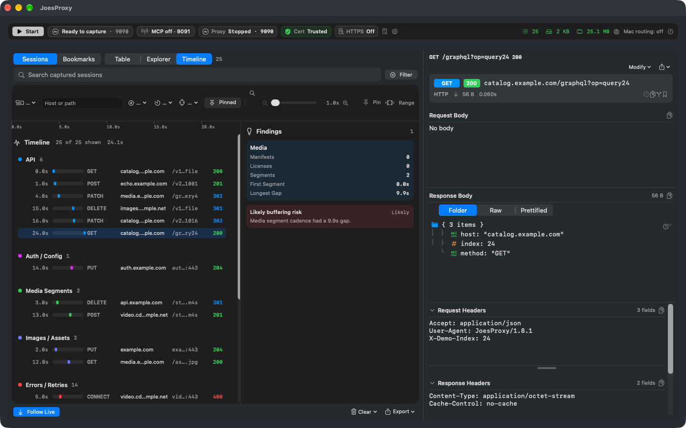

Reveal the traffic. Reshape the response.
Inspect app traffic live on your Mac or let an AI coding agent analyze, mutate, and verify it. From single API fixes to synthetic mock worlds, JoesProxy keeps capture, approvals, and privacy locally in your hands.

Live capture: Routed requests appear in real time; prettified JSON, headers, timing, and source device origins stay connected beside each session.
Follow your traffic your way
Switch between chronological, structural, and temporal views of live network activity.
Live Request Stream
Scan requests in arrival order as they happen. Filter by host, status code, method, or source device (Mac, iOS Simulator, iPhone, Apple TV, Docker). Prettified JSON, headers, and timing metrics stay linked beside the selected session.
Host & Endpoint Tree
Group busy captures by domain and endpoint path. Great for apps that communicate with dozens of microservices simultaneously—drill into the exact service you care about instead of scrolling a wall of logs.
Automated Anomaly Findings
Identify sequencing bottlenecks, playback gaps, retry clusters, and buffering risks. JoesProxy automatically analyzes timing and surfaces actionable findings before issues reach production.

Explorer View: Foldered domain hierarchy.

Timeline View: Automatic anomaly callouts.
Reshape responses on the fly
Test client edge cases and error resilience without waiting on backend deployments or server changes.
Map Local
Replace any upstream response with a local draft file, inline JSON snippet, or an entire mock directory tree served as a mock API.
Block & Fault Inject
Simulate outages by dropping connections or returning synthetic status codes (404, 500, 503) to test error fallbacks and retry policies.
Map Remote
Forward traffic to alternate hosts, staging servers, or local Docker containers while rewriting destination paths and queries.
Live JSON Rewrites
Patch specific fields in live upstream responses (e.g. adjust prices, toggle feature flags) without altering the rest of the payload.
Network Throttling
Simulate real-world conditions from 56k modem to flaky 3G or custom bandwidth and latency presets right from your desk.
No-Caching Controls
Strip cache headers globally or per-domain so your client always receives fresh upstream responses during active debugging.
Your AI agent can investigate. You authorize the work.
Built-in Model Context Protocol (MCP) server connects JoesProxy directly to Claude Code, Cursor, and Codex.
An enrolled AI assistant can inspect captured sessions, formulate hypotheses, and propose targeted fixes. But no traffic mutation or sensitive data access takes effect without your explicit, in-app approval.
Screenshot omitted from this source snapshot: the earlier image has not been cleared for public distribution.
In-App Approvals: Every agent action requires explicit human authorization.
Cutting-edge wire diagnostics for agentic workflows
Autonomous engines designed for systematic debugging, fuzzing, and client resilience testing.
Hypothesis DAGs & Fault Bisection
Formulate multi-branch hypothesis trees; automatically prune disproven theories and bisect root causes across complex multi-step API flows.
LLM Stream Inspector & Sandbox
Inspect SSE token deltas, measure TTFT, throughput (tokens/sec), and inter-token jitter; detect prompt leakages and inject streaming faults.
Async Race-Condition Fuzzing
Permute concurrent API arrival orderings using deterministic micro-delays to expose timing-dependent crashes and race conditions.
Counterfactual Resilience Optimizer
Automatically mutate JSON response fields (nullify, omit, type-coerce) to isolate breaking points and generate defensive Swift decoding advice.
Multi-Session Trajectory Diffing
Align two capture files (e.g. baseline release vs broken nightly) to pinpoint the exact step index and payload delta where execution diverged.
Semantic Wire Mocking
Intercept natural language search and chat queries, matching them against mock pools using zero-dependency local vector cosine similarity.
Try these prompts with your AI assistant
Once MCP is running, just describe what you want in plain language.
Debug any device in minutes
Guided setup wizards walk through certificate trust and traffic verification step-by-step.
Ready to see what your app is really saying?
Download JoesProxy for macOS and start capturing traffic in under 60 seconds.